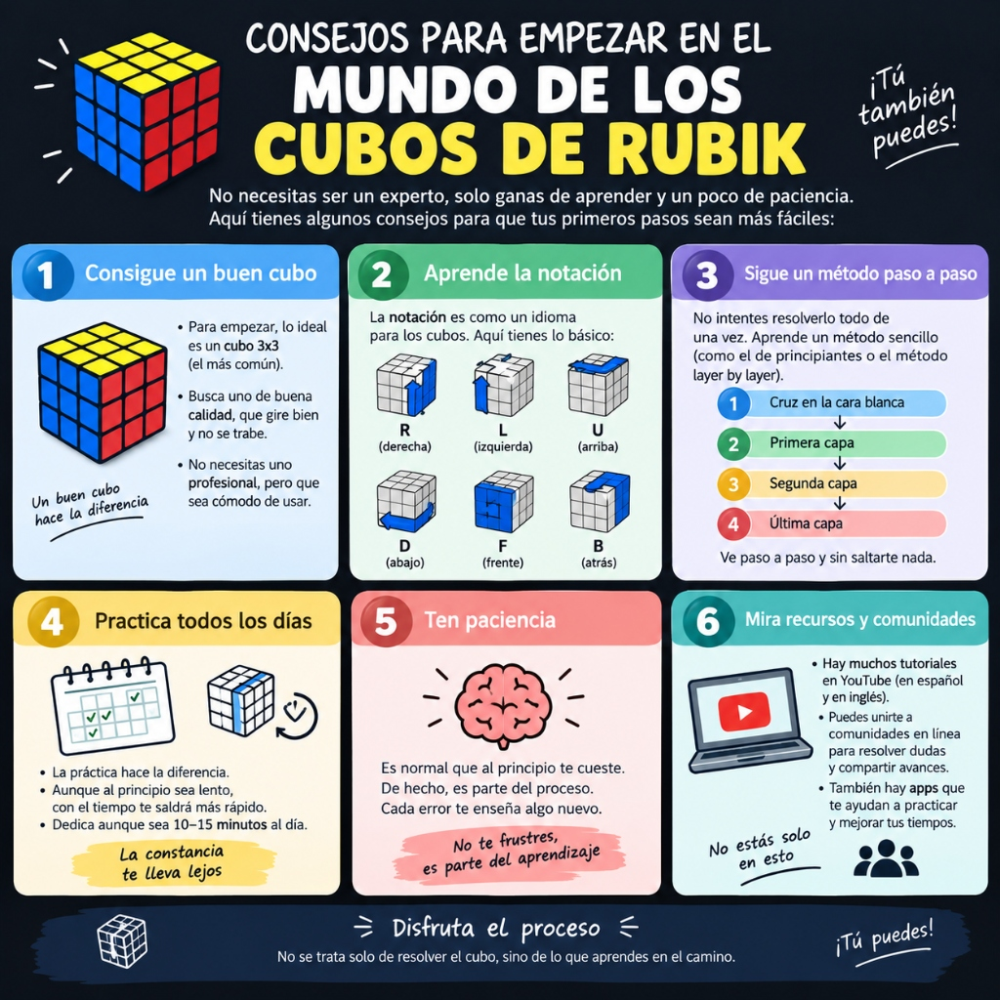

Historia del cubo de Rubik
Conoce cómo nació uno de los rompecabezas más famosos del mundo en 1974 de la mano del arquitecto e inventor Ernő Rubik, y cómo pasó de ser una herramienta de clase a un fenómeno y deporte mundial.
El mundo del cubo de Rubik
Conoce la historia del cubo de Rubik, aprende conceptos de speedcubing y descubre consejos para mejorar tu práctica diaria y tus tiempos.
Conoce cómo nació uno de los rompecabezas más famosos del mundo en 1974 de la mano del arquitecto e inventor Ernő Rubik, y cómo pasó de ser una herramienta de clase a un fenómeno y deporte mundial.
Descubre en qué consiste resolver cubos de Rubik buscando los mejores tiempos, cómo son los torneos oficiales de la WCA y la comunidad que existe alrededor del mundo compitiendo.

Una guía visual con los pasos para iniciarse: conseguir un cubo 3x3 cómodo, aprender la notación básica (R, L, U, D, F, B), seguir el método capa por capa y tener paciencia practicando todos los días.
Consejos para bajar tus marcas personales: utilizar un timer oficial con almohadillas, practicar el lookahead (ver las siguientes piezas mientras ejecutas el par actual) y lubricar el mecanismo periódicamente.